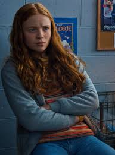

Maxine "Max" Mayfield (portrayed by Sadie Sink) is Billy's younger stepsister, an avid skateboarder, and the tomboy of the group who catches the attention of both Lucas and Dustin.[12] While she never played Dungeons and Dragons, she calls herself the "zoomer" of the party, despite Mike's persistence that the term is made-up. She claims that the role of the "zoomer" is to transport the group from place to place. In the second season, while she is driving a car very proficiently, she says to Mike, "See? Zoomer." In season three, she and Lucas are dating, and she and Eleven become close friends.
